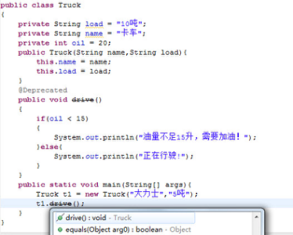
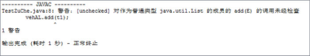

8.2 内建注解
在Java的java.lang包中，预定义了三个注解，它们分别是限定重写父类方法的@Override注解，标记已过时的@Deprecated 注解和抑制编译器警告的@SuppressWarnings 注解，通常称这三个注解为内建注解或基本注解。
8.2.1 @Override注解
@Override注解被用于标注方法，被该注解标注的方法是重写了父类的方法，起到了确定的作用。下面通过一个例子来演示@Override注解的作用。
假设“租车系统”中Vehicle类和Truck类的代码如下，其中Truck类继承自Vehicle类，且重写了Vehicle类的drive()方法（根据需求这个方法必须要重写）。
public class Vehicle
{
String name = "汽车";
int oil = 20;
int loss = 0;
public Vehicle(String name)
{
this.name = name;
}
//车辆行驶的方法
public void drive()
{
if(oil < 10)
{
System.out.println("油量不足10升，需要加油！");
}else{
System.out.println("正在行驶!");
oil = oil - 5;
loss = loss + 10;
}
}
}
public class Truck extends Vehicle
{
private String load = "10吨";
public Truck(String name,String load){
super(name);
this.load = load;
}
public static void main(String[] args){
Vehicle t1 = new Truck("大力士","5吨");
t1.drive();
}
//子类重写父类的drive()方法
public void drive()
{
if(oil < 15)
{
System.out.println("油量不足15升，需要加油！");
}else{
System.out.println("正在行驶!");
oil = oil - 10;
loss = loss + 10;
}
}
}
编译、运行Truck类，程序可以按用户需求执行。但是有可能程序员在写Truck类的代码时，误将drive()写成了driver()，然而在执行t1.drive()；语句时，因为drive()方法并未被重写，因此t1.drive()调用的还是Vehicle类的drive()方法。最不幸的是，这种错误程序编译时是不会报错的，即使在运行时如果不跟踪代码也不容易发现这个错误，这样最终会为以后修复这个错误带来很大的困难。
@Override注解就是为了解决类似问题出现的，我们可以在子类重写父类的方法前加上@Override，表示这个方法是覆盖了父类的方法。如果该方法不是覆盖了父类的方法，例如如上所述将drive()写成了driver()，此时在driver()方法前加上@Override注解的话，则代码编译不能通过，提示被@Override注解的方法必须在父类中存在同样的方法，程序才能编译通过。
需要补充一句，@Override注解只能用来修饰方法，不能用来修饰其他元素。
8.2.2 @Deprecated注解
如果大家之前使用Eclipse等集成开发环境编写过Java程序，会经常在属性或方法提示中看到@Deprecated。如果某个类成员的提示中出现了@Deprecated，就表示这个类成员已经过时，在未来的JDK版本中可能被删除，不建议使用。之所以现在还保留，是因为给那些已经使用了这些类成员的程序一个缓冲期，否则如果现在就删除这个类成员，那么这些程序就无法在新的环境下编译运行了。
在学习多线程的时候，提到过终止一个线程可以调用这个线程的stop()方法，但该方法已被废弃，不建议使用。通过查看JDK API可以看到，Thread类的stop()方法是被@Deprecated注解标注的，所以准确来说，这个stop()方法是因为过时才不建议使用的。
简化前面Truck类的代码，并在drive()方法前使用@Deprecated注解标注。如果集成开发环境换成Eclipse，则在方法定义处、方法引用处以及在成员列表中都有变化，如图8.1所示。

图8.1 @Deprecated注解的使用
在这个例子中，Truck类的drive()方法被@Deprecated注解标注，提醒程序员这是一个过时的方法，尽量不要使用，避免以后出现问题。假设有个BigTruck类继承Truck类，并且重写了这个过时drive()方法，又会怎样呢？编译程序，编译器会报错，提示“注意：BigTruck.java使用或覆盖了已过时的API。”和“注意：要了解详细信息，请使用-Xlint:deprecation重新编译。”
8.2.3 @SuppressWarnings注解
这个世界总是这么奇妙，既然有可以使编译器产生警告信息的注解，那么通常也会有抑制编译器产生警告信息的注解，@SuppressWarnings注解就是为了这样一个目的而存在的。让我们先看看下面的代码：
import java.util.*;
public class TestZuChe
{
public static void main(String[] args)
{
List vehAL = new ArrayList();
Truck t1 = new Truck("大力士","5吨");
vehAL.add(t1);
}
}
编译程序，编译器会抛出如下的警告信息：“注意：TestZuChe.java使用了未经检查或不安全的操作。”和“注意：要了解详细信息，请使用-Xlint:unchecked重新编译。”
增加了-Xlint:unchecked编译参数之后重新编译，显示结果如图8.2所示。

图8.2 编译器警告信息
这个警告信息提示List类必须使用泛型才是安全的，才可以进行类型检查，现在未做检查，所以存在不安全因素。如果想取消这些警告信息，具体代码如下：
import java.util.*;
public class TestZuChe
{
@SuppressWarnings(value = "unchecked")
public static void main(String[] args)
{
//List<Truck> vehAL = new ArrayList<Truck>();
List vehAL = new ArrayList();
Truck t1 = new Truck("大力士","5吨");
vehAL.add(t1);
}
}
再次编译程序，警告被抑制。当然，编译器出现警告，是要提醒程序员有哪些地方需要注意，抑制警告不是目的，正确的解决办法是使用泛型对集合中的元素进行约束，使对集合的操作可以被检查，如代码中被注释的部分那样。
@SuppressWarnings注解和前面两个注解不同之处在于，这个注解带一个参数，或者说有一个属性。这里注解@SuppressWarnings(value = "unchecked")的含义为抑制不检查的警告。当然还可以同时抑制其他警告，例如@SuppressWarnings(value = {"unchecked", "unused"})就是同时抑制了不检查和未被使用的警告。下面列举了@SuppressWarnings注解相关属性值的含义。
deprecation：使用了过时的程序元素。
unchecked：执行了未检查的转换。
unused：有程序元素未被使用。
fallthrough：switch程序块直接通往下一种情况而没有break。
path：在类路径中有不存在的路径。
serial：在可序列化的类上缺少serialVersionUID定义。
finally：任何finally子句不能正常完成。
all：所有情况。